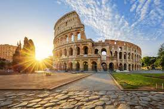
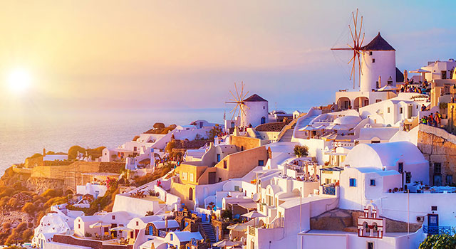

France entices people of all ages with some of the world’s most iconic landmarks, world-class art and architecture, sensational food, stunning beaches, glitzy ski resorts, beautiful countryside and a staggering amount of history. There’s the city’s romantic image, the stunning architecture, the Louvre museum, the iconic Eiffel Tower as well as the simple pleasure of sitting at a café terrace and watching the world go by. European and US visitors have flocked here from all the world for many years, and they keep coming back and in recent years the appeal of Paris has gripped the far east, with more and more Chinese nationals coming to get a glimpse of the Champs Elysées and its array of boutiques. Paris is undoubtedly one of the most fascinating and beautiful cities on earth. With glamorous buildings, chic cafés and more galleries than you could ever visit, Paris will captivate your heart and soul. France’s scenery is as diverse as it is beautiful, with the glittering coastlines of the French Riviera, the patchwork fields of the Loire Valley, the snow-capped Alps and centuries old harbor towns of Normandy. This, of course, is hugely appealing for lovers of the great outdoors. Rather than choosing between mountains and beaches, France offers both and a whole lot more. France’s history is etched into every street corner. Visit the Loire Valley to see and explore a multitude of castles sitting majestically behind perfectly manicured gardens.
2. Italy

Italy is famous for the Renaissance and the incredible artists it produced. Italy is famous for its tourism, its art cities and unique scenery. Italy is also known for its language, its opera, its fashion and its luxury brands. Italy is filled with riches. It offers you spectacular cities, ancient ruins, wonderful museums, soaring mountains, great beaches, and beautiful natural scenery – all packed in one. No wonder, it features in the bucket lists of a lot of people. Italy is a destination where even one visit is not enough. You will definitely come back for more, for its velvety tiramisu, piping hot melting cheese of a fresh pizza, the smooth cold taste of gelato, the perfect Instagram filter-like golden glow of Venice, the very elegant style of roman boutiques, sunlight spilt across olive trees. These are a few of the many reasons why people love Italy so much. taly certainly does have much to offer: spectacular cities, ancient ruins, wonderful museums, soaring mountains, great beaches, and beautiful natural scenery.
3. Greece

Greece is home to marvellous monuments and UNESCO heritage sites. Take the time to see the beautiful Acropolis in Athens and its stunning museum, visit the archaeological site of Delphi or the open-air island museum of Delos, the stunning Byzantine monuments of Thessaloniki, the myth-laden Palace of Knossos or the breathtaking medieval Old Town of Rhodes. Greece boasts a great variety of food and drink, with a vast array of Greek wines, local liquors and world-known dishes. Discover food specialties of the islands or the hearty dishes on the mountain villages. Savor fresh seafood and seasonal vegetables cooked with a healthy dose of Greek olive oil. Visiting Greece is a feast for the senses. Rugged mountains, exotic, pristine beaches with crystal-clear waters, green valleys, quiet lakes and lush forests – Greece has it all. Get the chance to discover different lifestyles and wonders all in one country as the natural beauty and diversity is bound to astonish you. Whether young in age or at heart, the time of your life can be had in Greece. From party islands such as Mykonos, Ios or Zakynthos, to cosmopolitan cities such as Athens or Thessaloniki, Greece hardly sleeps. And even if you are finding yourself in a more romantic or bucolic area, experiencing a typical panigyri (local feast) is a memorable moment that will make your holiday special.